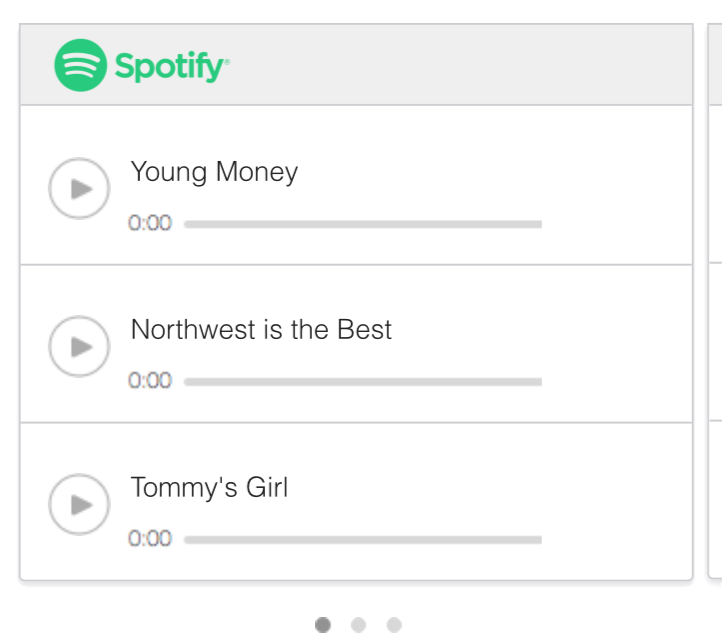
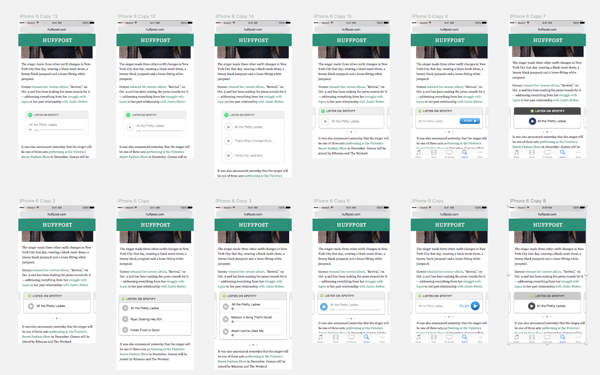
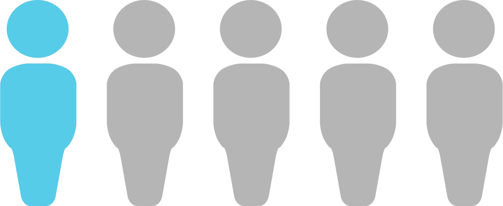
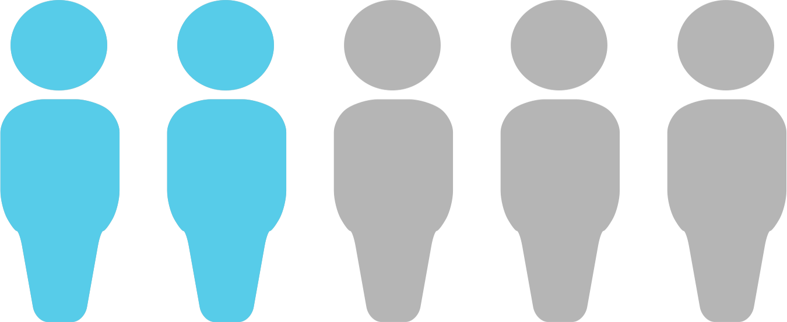
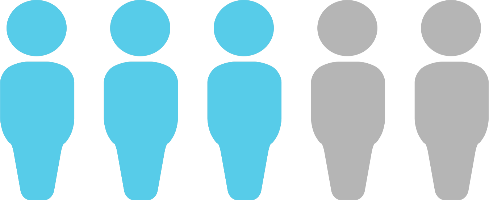
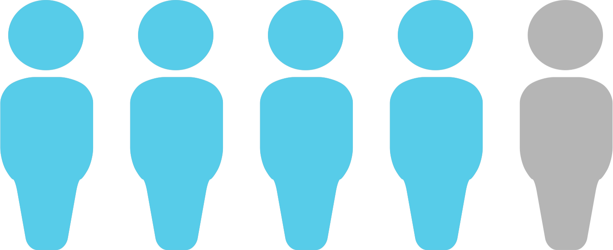
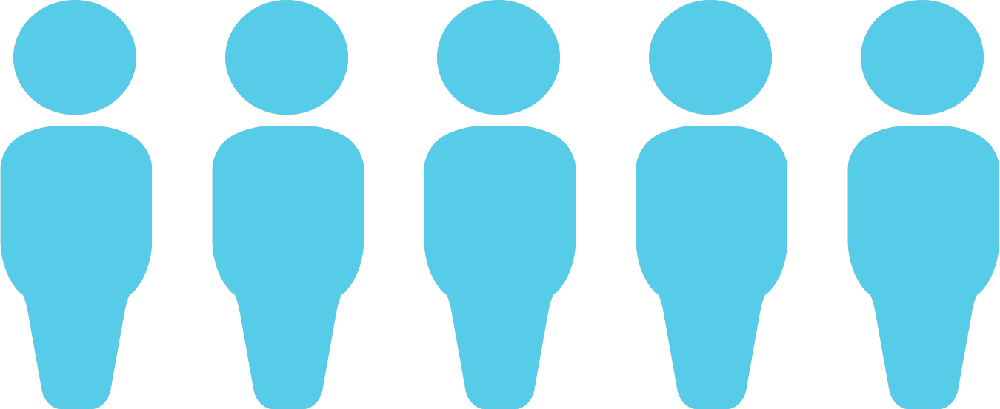

ROLE
I led a team of 4 designers to develop, scope and execute the project. I also acted as primary client contact and facilitated internal and client meetings.
CONSTRAINTS
Due to the new feature release cycles at URX, we had to modify the design of the carousel without any additional engineering requirements. So all design changes had to be made purely as Front End changes.
Outcomes
Before

After
Results
With the tweaks made to the carousel design, we noticed improvement in both the metrics that were important to user engagement for URX.
50%
INCREASE IN CLICK THRU RATE
500%
INCREASE IN SWIPE RATE
Process
In order to achieve our goals, we went through the following process. We went through usability testing of the carousel unit, then we went into a design studio process where we iterated and prototyped new carousel versions. And finally, we A/B tested 4 different designs.
Usability Studies
Design Studio
A/B Testing
Usability Studies
How do you usability test an Ad?
When we began, we followed standard usability testing methods in order to test the engagement of the carousel. We recrutied users who read on their mobile phones frequently. We gave them a phone which had an article from Wikia, and we asked them to go through the article, interact with it and narrate their thoughts.
However, pretty early on it the process, we realized this was not the best method to test the carousels for these reasons:
- Without a clearly defined task, the users commented on anything and everything they saw, such as font sizes in the article, the publication's logo etc.
- People can’t predict future behavior i.e would they have clicked on this Ad?
- Users weren't keen on reading a random article they had no interest in
- We got no insights on the design of the carousel unit
So we decided to dwelve deeper to understand what factors were at play each time a user came across an article with a carousel in it.
So then, what factors affect whether a user will click on the carousel?
| Factors | How does it affect behavior? | How we controlled for it |
|---|---|---|
Users |
How interested are the users in the subject matter of the article? Do they know the artist? Are they a fan? |
Recruited participants who read Huffpo + Maroon 5 fans + iPhone users |
Environment |
Where is the user? Are they at home, or on the train? Is it noisy outside or are they wearing headphones? Are they in a rush? |
Left the participants in a comfy room on a couch, with no experimentors present for 5 minutes to check out the article |
Article Content |
How interesting is the content of the article itself? Is it announcing a new song? Is it about the artist’s family history? |
Crafted a special article on a new album release to make the content more interesting |
Song Relevancy |
How relevant are the songs in the carousel to the article itself Are the songs mentioned in the article? Or is it a random list? |
Used song names that were mentioned in the article itself. |
Design |
How is the design of the carousel? What do people think will happen when they click it? Is there a clear CTA? |
In order to only be testing for the design of the carousel, we needed to control for the 4 factors that had a high impact in the click through rate. |
Design Studio
What is our design hypothesis?
We felt that a carousel unit that resembles a native, embedded music player on the page will
- Look less like an Ad
- AND hence users are more likely to engage with it
So we drew inspiration from the designs from native music players that are currently out there and started a design studio process. During the course of 3 hours, we came up with ideas, sketched them, presented to the team and finally voted on the best ideas.
Based on the top voted ideas, we created high fidelity mock ups of the ideas that we wanted to test.
By combining multiple ideas, and designing a new carousel unit, we would have no way to interpret the final results. We won't have insights on exactly what ideas led to good or bad results, but merely a final product.
So in order to gain good insights, we decided to test each idea individually, and iterate on carousel version by version, rather than a overhaul.
Experiment Loop Model
We picked 4 top ideas, namely 1) Play Button, 2) "Listen On" Header CTA, 3) Progress Bar, 4) Single Song Choice. We developed hypotheses on what metric we would notice an improvement in for each idea.
| Variables | Hypothesis | Expected Behavior |
|---|---|---|
 Play Button |
Adding a play button makes for a clearer CTA. Engaged to clicked on first pass. |
3/5 users will click on the carousel to listen to music on first pass |
 Listen On CTA |
Adding “Listen On” text to the top bar will make the player seem more native |
3/5 users will think that the carousel is a native music player |
 Progress Bar |
Adding a progress bar will make the carousel look like a native player |
4/5 users will click on the carousel to listen to music on first pass |
 Single Song |
Using a single song card reduces complexity of choice. Engaged to clicked on first pass. |
4/5 users will think that the carousel is a native music player |
We then compared the actual results to the expected results, and went through with the change if the actual results were better. If the actual results do no meet the hypothesis, then we drop that idea for the next round of testing.
A/B Testing
We gave our Maroon 5 fan participants the article we had crafted about the band's new album. It contained the carousel unit in the middle, along with other media content, such as videos, instagram images etc. We told them to check it out for 5 minutes, and left the room.
The experimenter came back into the room again to then ask the participants questions on their experience and their interaction with the carousel.
We tested 5 participants each for each version that we A/B tested.
Control Testing

Clicked on first pass
Thought it was a native player
Didn't think it was an Ad
We tested the current carousel unit from URX to get the baseline results. We based all hypotheses for Versions A-D based on these results.
Version A

Clicked on first pass
Thought it was a native player
Didn't think it was an Ad
Version A performed exceptionally well against the metric we were testing, which was click through rate. We expected 3 people to click, but 4 ended up clicking. So we incorporated the play button for all future versions.
Version B

Clicked on first pass
Thought it was a native player
Didn't think it was an Ad
Version B performed very poorly compared to the hypothesis. 4 people thought it was an Ad, and it might have been because the "Listen On.." CTA at the header might have been too aggressive, making it look more like an Advertisement. So we did not incorporate the Listen On CTA in future versions.
Version C

Clicked on first pass
Thought it was a native player
Didn't think it was an Ad
Version C performed really well. Having even a static progress bar made the carousel seem more native and drove up our click through rate to match our hypothesis. So we went ahead and incorporated the progress bar for future versions.
Version D

Clicked on first pass
Thought it was a native player
Didn't think it was an Ad
Version D was an interesting case. While all users thought it was native and not an ad, it bombed on the key metric we were hypothesised for, which was click through rate. It might be because having a single song choice means the carousel occupies less space on the screen, and might have attracted less attention. So we decided not to go with the single song choice.
Insights and Recommendations
Based on the results from the A/B testing, Version C performed the best, which was recommended to URX. For the future, we also recommended conducting live in the wild A/B testing to further support our design.
For future optimization of user engagement, we also recommend testing other things like carousel placement in the article, song relevancy, and having only one provider.